Open this in Safari or Chrome (or add it to your home screen) to tick off sets and save your progress.
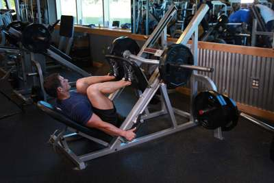 | Leg press (machine) 3 sets × 8 to 12 Start: 100 kg (you've done 93 to 117 kg) |
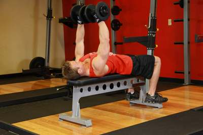 | Flat dumbbell bench press (dumbbells + bench) 3 sets × 8 to 12 Start: Two 8 kg dumbbells, one in each hand |
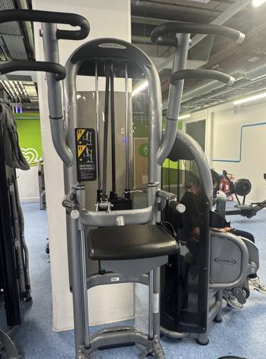 | Assisted pull-up machine (Matrix) (machine) 3 sets × 6 to 10 Start: Assist about 30 kg |
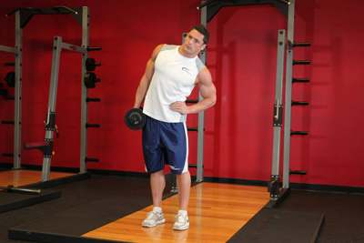 | Standing dumbbell side bend (dumbbells) 2 sets × 12 to 15 per side Start: 8 kg |
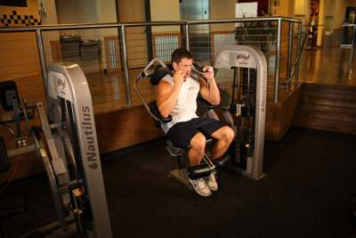 | Ab crunch machine (machine) 3 sets × 12 to 15 Start: 41 kg (your working weight) |
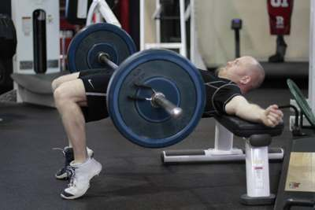 | Barbell hip thrust (barbell + bench) 3 sets × 8 to 12 Start: 40 kg: 20 kg bar plus a 10 kg plate on each side |
| Flat dumbbell bench press (dumbbells + bench) 3 sets × 8 to 12 Start: Two 8 kg dumbbells, one in each hand | |
| Assisted pull-up machine (Matrix) (machine) 3 sets × 6 to 10 Start: Assist about 30 kg | |
| Standing dumbbell side bend (dumbbells) 2 sets × 12 to 15 per side Start: 8 kg | |
| Ab crunch machine (machine) 3 sets × 12 to 15 Start: 41 kg (your working weight) |
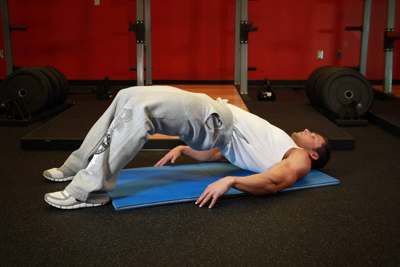 | Banded glute bridge (mat + loop band) 3 sets × 15 Start: Red loop band above knees |
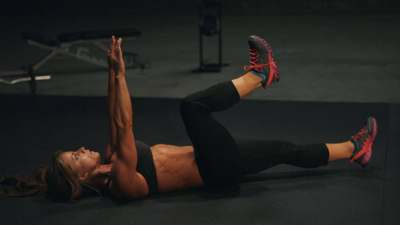 | Dead bug (mat) 3 sets × 8 per side Start: Bodyweight |
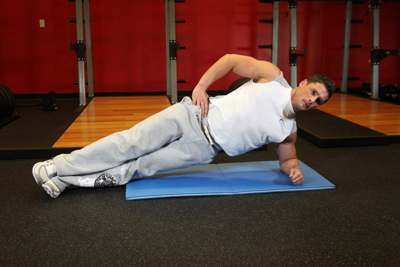 | Side plank (mat) 2 sets × 20 to 30 s per side Start: Knees down if needed |
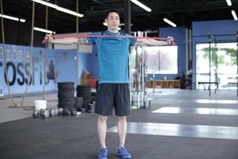 | Band pull-apart (pull-up band) 2 sets × 15 Start: Red or yellow band |
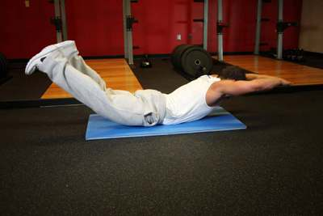 | Superman hold (mat) 2 sets × 10 (3-second hold) Start: Bodyweight |
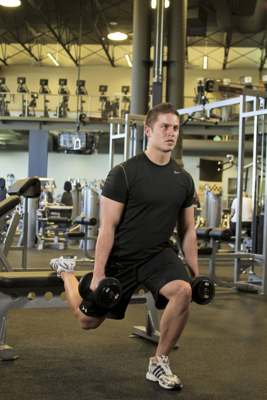 | Bulgarian split squat (dumbbells + sofa) 3 sets × 8 to 15 per leg Start: Two 7 kg dumbbells, one in each hand |
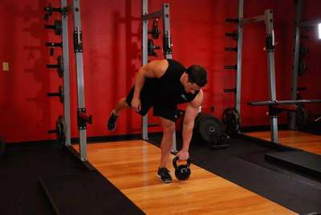 | Single-leg Romanian deadlift (dumbbells) 3 sets × 10 to 15 per leg Start: One 7 kg dumbbell |
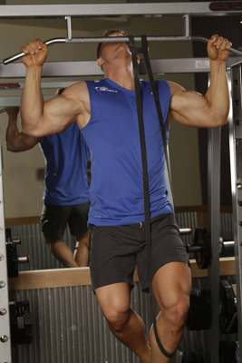 | Band-assisted pull-up (bar + band) 3 sets × 3 to 8 Start: Green or purple band |
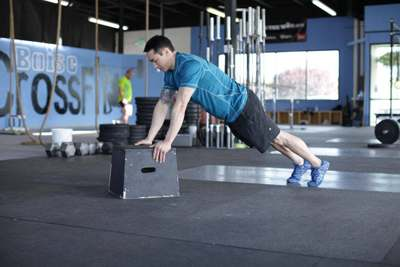 | Incline push-up (bench or Smith bar) 3 sets × 8 to 15 Start: Hands on a bench, or a Smith bar set at hip height |
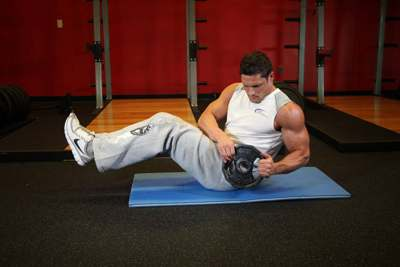 | Russian twist (mat + dumbbell) 3 sets × 10 to 15 per side Start: One 4 kg dumbbell (move to 7 kg when it's easy) |
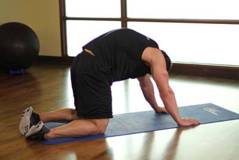 | Cat-cow (mat) 2 sets × 10 Start: Bodyweight |
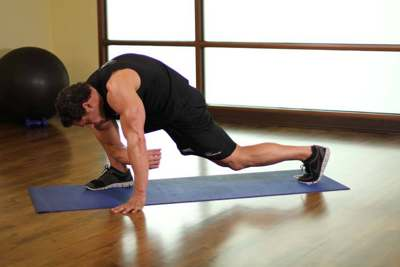 | World's greatest stretch (mat) 2 sets × 5 per side Start: Bodyweight |
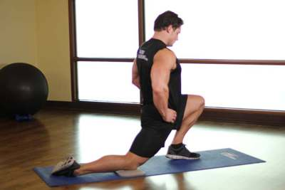 | Kneeling hip flexor stretch (mat) 2 sets × 30 s per side Start: Bodyweight |
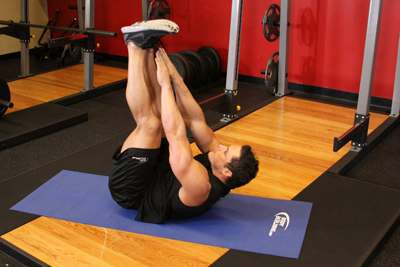 | Toe-touch crunch (mat) 2 sets × 15 Start: Bodyweight, or one 4 kg dumbbell held in both hands |
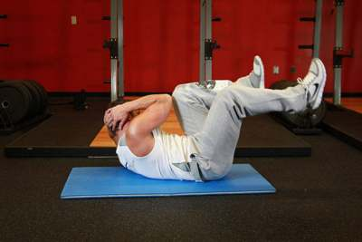 | Bicycle crunch (mat) 2 sets × 15 per side Start: Bodyweight |
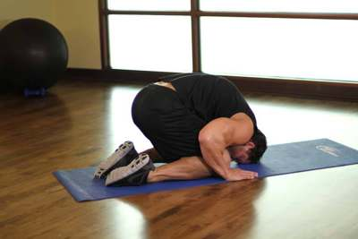 | Child's pose (mat) 1 sets × 60 s Start: Bodyweight |
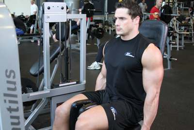 | Hip adductor machine (machine) 3 sets × 12 to 15 Start: About 40 kg on the stack |
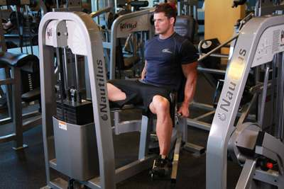 | Hip abductor machine (machine) 3 sets × 12 to 15 Start: 70 kg (you've done 66 to 77 kg) |
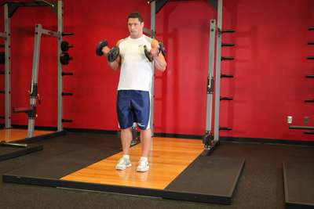 | Dumbbell biceps curl (dumbbells) 3 sets × 10 to 12 Start: 5 kg each hand |
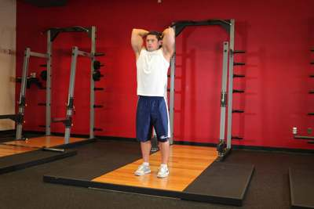 | Overhead triceps extension (dumbbells) 3 sets × 10 to 12 Start: One 7 kg dumbbell, held with both hands |
| Abdominal crunch machine (Matrix) (machine) 3 sets × 12 to 15 Start: 32 kg (you've done 27 to 32 kg) |
| Assisted pull-up machine (Matrix) (machine) 3 sets × 5 to 8 Start: Assist about 30 kg | |
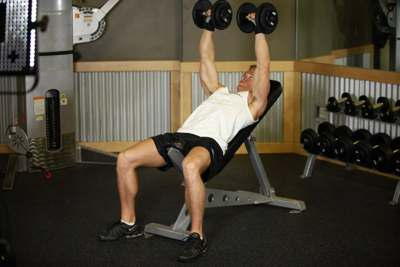 | Incline dumbbell press (dumbbells + bench) 3 sets × 6 to 10 Start: Two 8 kg dumbbells, one in each hand |
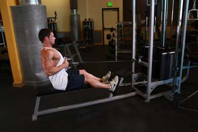 | Seated cable row (cable) 3 sets × 8 to 12 Start: 20.5 kg (you did 3 × 12 at 18 kg) |
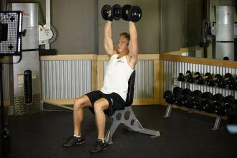 | Dumbbell shoulder press (dumbbells + bench) 2 sets × 8 to 12 Start: Two 6 kg dumbbells, one in each hand |
| Ab crunch machine (machine) 3 sets × 12 to 15 Start: 41 kg (your working weight) |
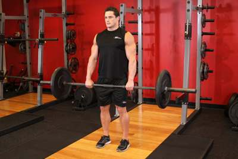 | Barbell deadlift (barbell) 3 sets × 4 to 6 Start: 50 kg: 20 kg bar plus a 15 kg plate on each side |
| Bulgarian split squat (dumbbells + bench) 3 sets × 8 to 12 per leg Start: Two 7 kg dumbbells, one in each hand | |
| Hip adductor machine (machine) 2 sets × 12 to 15 Start: About 40 kg on the stack | |
| Abdominal crunch machine (Matrix) (machine) 3 sets × 10 to 15 Start: 32 kg (you've done 27 to 32 kg) |
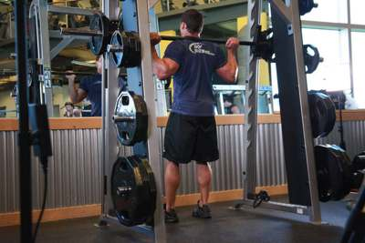 | Smith machine squat (Smith machine) 3 sets × 5 to 8 Start: Empty bar plus a 10 kg plate on each side (log 20) |
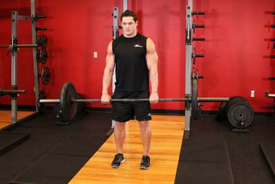 | Barbell Romanian deadlift (barbell) 3 sets × 8 to 10 Start: 40 kg: 20 kg bar plus a 10 kg plate on each side |
| Hip adductor machine (machine) 2 sets × 12 to 15 Start: About 40 kg on the stack | |
| Abdominal crunch machine (Matrix) (machine) 3 sets × 10 to 15 Start: 32 kg (you've done 27 to 32 kg) |